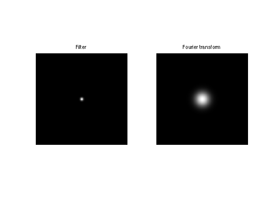
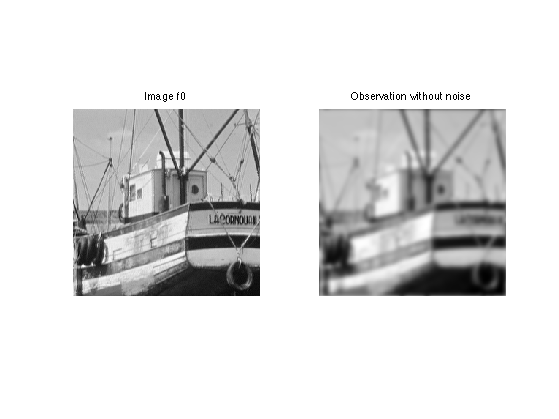
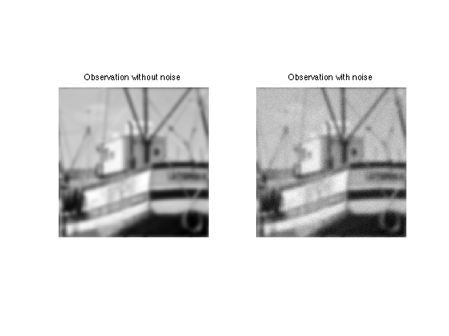
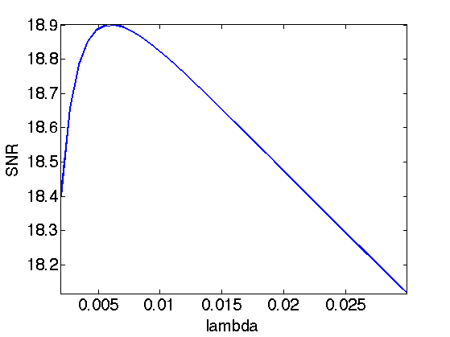
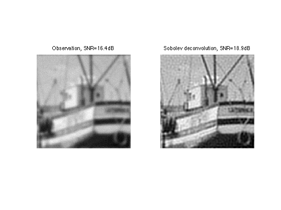
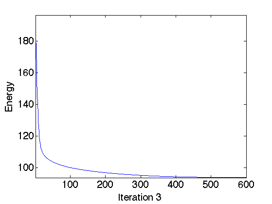
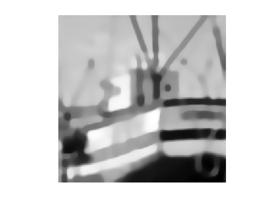
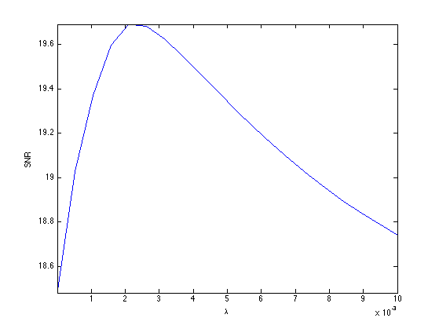

Image Deconvolution using Variational Method
This numerical tour explores the use of Sobolev and TV regularization to perform image deconvolution.
Contents
Installing toolboxes and setting up the path.
You need to download the following files: signal toolbox and general toolbox.
You need to unzip these toolboxes in your working directory, so that you have toolbox_signal and toolbox_general in your directory.
For Scilab user: you must replace the Matlab comment '%' by its Scilab counterpart '//'.
Recommandation: You should create a text file named for instance numericaltour.sce (in Scilab) or numericaltour.m (in Matlab) to write all the Scilab/Matlab command you want to execute. Then, simply run exec('numericaltour.sce'); (in Scilab) or numericaltour; (in Matlab) to run the commands.
Execute this line only if you are using Matlab.
getd = @(p)path(p,path); % scilab users must *not* execute this
Then you can add the toolboxes to the path.
getd('toolbox_signal/'); getd('toolbox_general/');
This tour is concerned with the deconvolution problem. The measurement are assumed to be blurry and noisy: \[y=\Phi f_0 + w = h \star f_0 + w\]
Where here h is the filter (low pass) and w some noise (here assumed to be white Gaussian).
We consider variational deconvolution methods, that finds a regularizer through a convex optimization: \[f^\star \in \text{argmin}_f \frac{1}{2}\|y-\Phi f\|^2 + \lambda J(f)\]
Where \(J(f)\) is a prior energy. In this tour we consider a simple L2 prior (the image is assumed to have a bounded energy), a Sobolev prior (the image is uniformly smooth) and an approximate total variation (the image has edges of bounded perimeter).
Note that the parameter \(\lambda\) should be carefully chosen to fit the noise level.
Image Blurring
Deconvolution corresponds to removing a blur from an image. We use here a Gaussian blur.
First we load the image to be inpainted.
n = 256; name = 'lena'; name = 'mri'; name = 'boat'; f0 = load_image(name); f0 = rescale(crop(f0,n));
We build a convolution kernel. Since we are going to use Fourier to compute the convolution, we set the center of the kernel in the (1,1) pixel location.
Width of the kernel, in pixel.
s = 3;
Kernel.
x = [0:n/2-1, -n/2:-1]; [Y,X] = meshgrid(x,x); h = exp( (-X.^2-Y.^2)/(2*s^2) ); h = h/sum(h(:));
Useful for later : the Fourier transform (should be real because of symmetry).
hF = real(fft2(h));
Display the kernel and its transform. We use fftshift to center the filter for display.
clf; imageplot(fftshift(h), 'Filter', 1,2,1); imageplot(fftshift(hF), 'Fourier transform', 1,2,2);
We use this short hand for the filtering. Note that this is a symmetric operator.
if using_matlab() Phi = @(x,h)real(ifft2(fft2(x).*fft2(h))); end
Important Scilab user should define a function Phi in a separate file Phi.sci to perform this.
Apply the filter.
y0 = Phi(f0,h);
Display the filtered observation.
clf; imageplot(f0, 'Image f0', 1,2,1); imageplot(y0, 'Observation without noise', 1,2,2);
Variance \(\sigma^2\) of the noise \(w\).
sigma = .02;
Add some noise to obtain the measurements ±\(y = \Phi f_0 + w\).
y = y0 + randn(n)*sigma;
Display.
clf; imageplot(y0, 'Observation without noise', 1,2,1); imageplot(clamp(y), 'Observation with noise', 1,2,2);
Deconvolution with L2 Regularization
Deconvolution is obtained by dividing the Fourier transform of \(y\) by \(\hat h\). \[f^\star(\omega) = \frac{\hat y(\omega)}{\hat h(\omega)} = \hat f_0(\omega) + \hat w(\omega)/{\hat h(\omega)}\]
Unfortunately this creates an explosion of the Noise.
To avoid this explosion, we consider a simple regularization. \[f^{\star} = \text{argmin}_f \: \|y-\Phi f\|^2 + \lambda \|f\|^2\]
Since the filtering is diagonalized over Fourier, the solution is simply computed over the Fourier domain as: \[\hat f^\star(\omega) = \frac{\hat y(\omega) \hat h(\omega)}{ \|\hat h(\omega)\|^2 + \lambda }\]
Useful for later: Fourier transform of the observations.
yF = fft2(y);
Select a value for the regularization parameter.
lambda = 0.02;
Perform the inversion.
fL2 = real( ifft2( yF .* hF ./ ( abs(hF).^2 + lambda) ) );
Display.
clf; imageplot(y, strcat(['Observation, SNR=' num2str(snr(f0,y),3) 'dB']), 1,2,1); imageplot(clamp(fL2), strcat(['L2 deconvolution, SNR=' num2str(snr(f0,fL2),3) 'dB']), 1,2,2);
Exercice 1: (check the solution) Find the optimal solution fL2 by testing several value of lambda.
exo1;
Display optimal result.
clf; imageplot(y, strcat(['Observation, SNR=' num2str(snr(f0,y),3) 'dB']), 1,2,1); imageplot(clamp(fL2), strcat(['L2 deconvolution, SNR=' num2str(snr(f0,fL2),3) 'dB']), 1,2,2);
Deconvolution by Sobolev Regularization.
L2 regularization did not perform any denoising. To remove some noise, we can penalize high frequencies using Sobolev regularization (quadratic grow).
The Sobolev prior reads (note the conversion from spacial domain to Fourier domain) \[J(f) = \sum_x \|\nabla f(x)\|^2 = \sum_{\omega} S(\omega) \|\hat f(\omega)\|^2 \] where \(S(\omega)=\|\omega\|^2\).
Since this prior can be written over the Fourier domain, one can compute the solution to the deblurring with Sobolev prior simply with the Fourier coefficients: \[\hat f^\star(\omega) = \frac{\hat y(\omega) \hat h(\omega)}{ \|\hat h(\omega)\|^2 + \lambda S(\omega) }\]
Compute the Sobolev prior penalty S (rescale to [0,1]).
S = (X.^2 + Y.^2)*(2/n)^2;
Regularization parameter:
lambda = 0.2;
Perform the inversion.
fSob = real( ifft2( yF .* hF ./ ( abs(hF).^2 + lambda*S) ) );
Display the result.
clf; imageplot(y, strcat(['Observation, SNR=' num2str(snr(f0,y),3) 'dB']), 1,2,1); imageplot(clamp(fSob), strcat(['Sobolev deconvolution, SNR=' num2str(snr(f0,fSob),3) 'dB']), 1,2,2);
Exercice 2: (check the solution) Find the optimal solution fSob by testing several value of lambda.
exo2;

Display optimal result.
clf; imageplot(y, strcat(['Observation, SNR=' num2str(snr(f0,y),3) 'dB']), 1,2,1); imageplot(clamp(fSob), strcat(['Sobolev deconvolution, SNR=' num2str(snr(f0,fSob),3) 'dB']), 1,2,2);
Deconvolution by Total Variation Regularization
Sobolev regularization perform a denoising but also tends to blur the edges, thus producing a poor results on cartoon images.
The TV prior is able to better reconstruct sharp edges. It reads: \[J(f) = \sum_x \| \nabla f(x)\|\]
With respect to the Sobolev energy, it simply corresponding to measuring the L1 norm instead of the L2 norm, thus dropping the square in the functional.
Unfortunately, the TV functional \(J(f)\) is not a smooth function of the image \(f\). It thus requires the use of advanced convex optimization method to be minimized for regularization.
An alternative is to replace the absolute value by a smooth absolute value. The smoothed TV norm reads: \[J(f) = \sum_x \sqrt{\|\nabla f(x)\|^2+\varepsilon^2}\]
Regularization parameter for the TV norm:
epsilon = 0.4*1e-2;
When epsilon gets close to zero, the smoothed energy becomes closer to the original total variation, but the optimization becomes more difficult. When epsilon becomes large, the smoothed energy becomes closer to the Sobolev energy, thus blurring the edges.
Unfortunately, this prior is non-quadratic, and cannot be expressed over the Fourier domain. One thus need to use an iterative scheme such as a gradient descent to approximate the solution.
An iteration of the gradient descent reads: \[f^{(k+1)} = f^{(k)} - \tau \left( h \star (h \star f^{(k)} - y) + \lambda \text{Grad} J(f^{(k)}) \right)\]
Regularization parameter.
lambda = 0.06;
The value of \(\tau\), the step size, should be smaller than twice the Lipschitz constant of the Gradient of the functional to be minimized, hence: \[ \tau< \frac{2}{1 + \lambda 8/\varepsilon }.\]
tau = 1.9 / ( 1 + lambda * 8 / epsilon);
Initialization.
fTV = y;
Number of iteration (quite a large number is required).
niter = 600;
The gradient of the smoothed TV energy is: \[\text{Grad} J(f) = -\text{div}\left( \frac{\nabla f}{ \sqrt{\|\nabla f\|^2+\varepsilon^2} } \right)\]
Compute the gradient of the smoothed TV functional.
Gr = grad(fTV); d = sqrt( epsilon^2 + sum3(Gr.^2,3) ); G = -div( Gr./repmat(d, [1 1 2]) );
Compute the TV norm, usefull to keep track of its decay through iterations.
tv = sum(d(:));
Perform a step of gradient descent for the inversion.
e = Phi(fTV,h)-y; fTV = fTV - tau*( Phi(e,h) + lambda*G);
Exercice 3: (check the solution) Perform the deblurring by a gradient descent. Keep track of the function being minimized.
exo3;
Display the result.
clf; imageplot(clamp(fTV));
Exercice 4: (check the solution) Explore the different values of lambda to find the optimal solution. Display the SNR as a function of lambda.
exo4;
Display the result.
clf; imageplot(clamp(fSob), strcat(['Sobolev, SNR=' num2str(snr(f0,fSob),3) 'dB']), 1,2,1); imageplot(clamp(fTV), strcat(['TV, SNR=' num2str(snr(f0,fTV),3) 'dB']), 1,2,2);

Comparison of Variational and Sparsity Methods
Exercice 5: (check the solution) Compare sparsity, Sobolev and TV deblurring.
exo5;